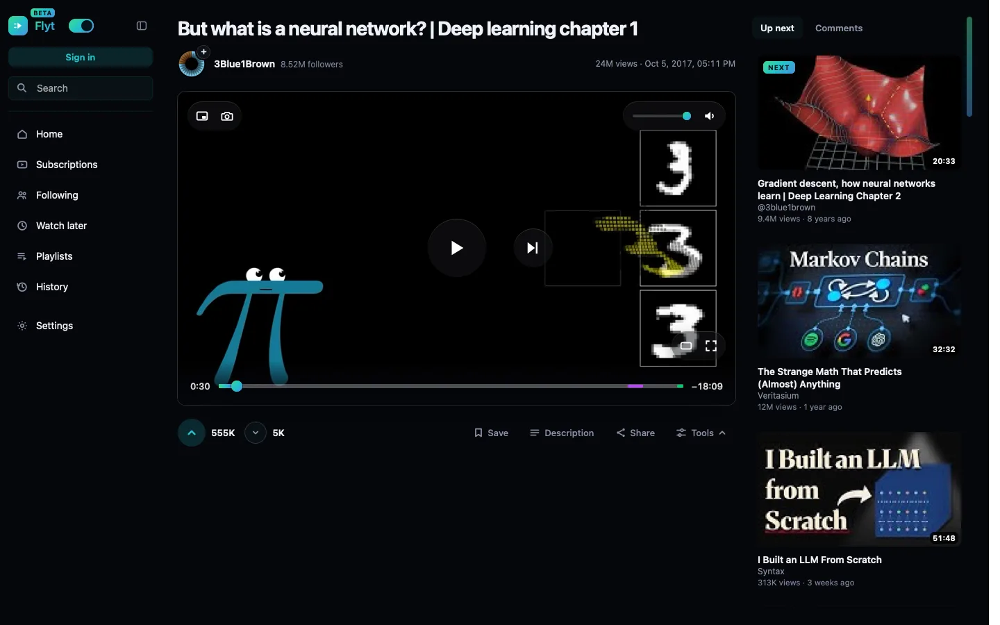
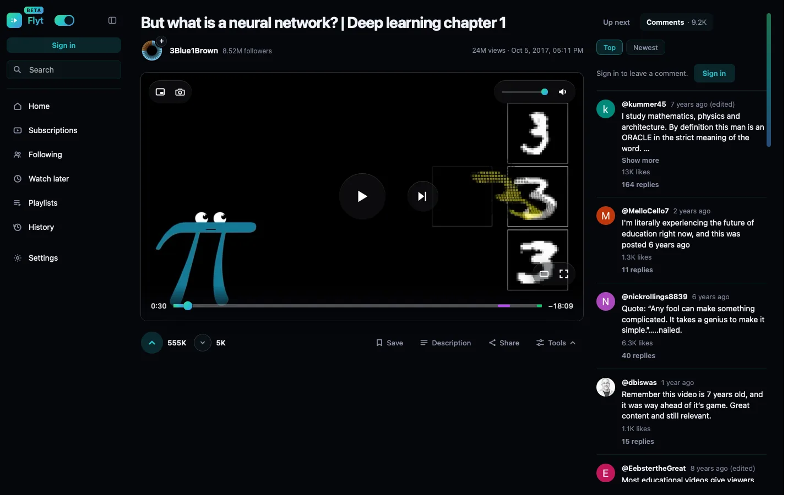
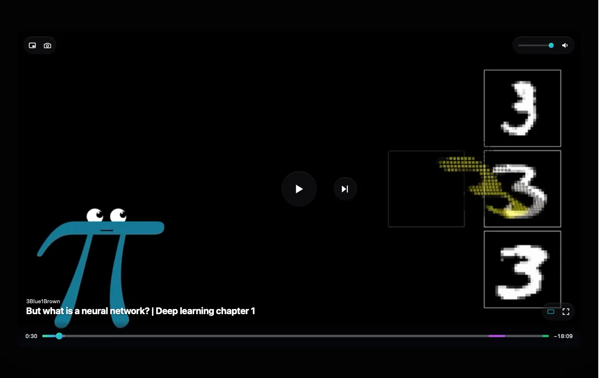
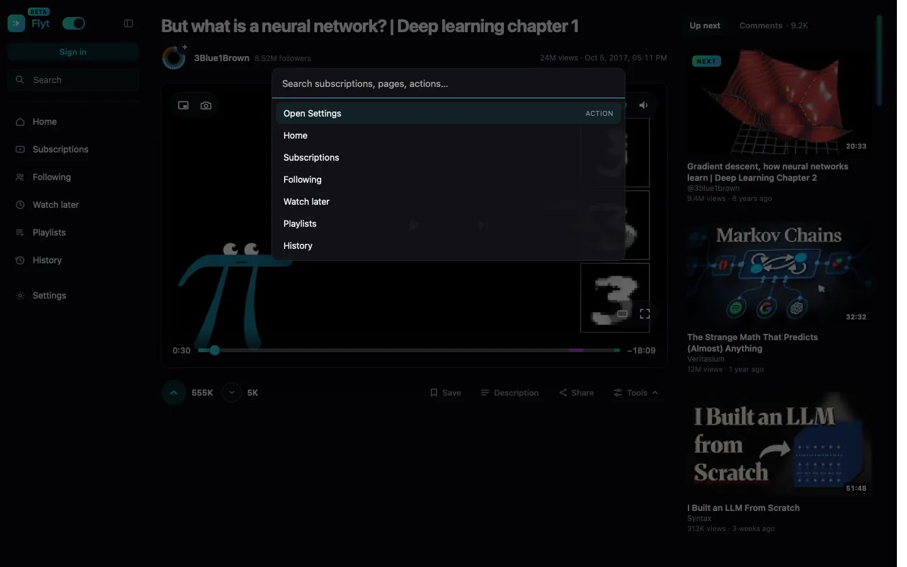
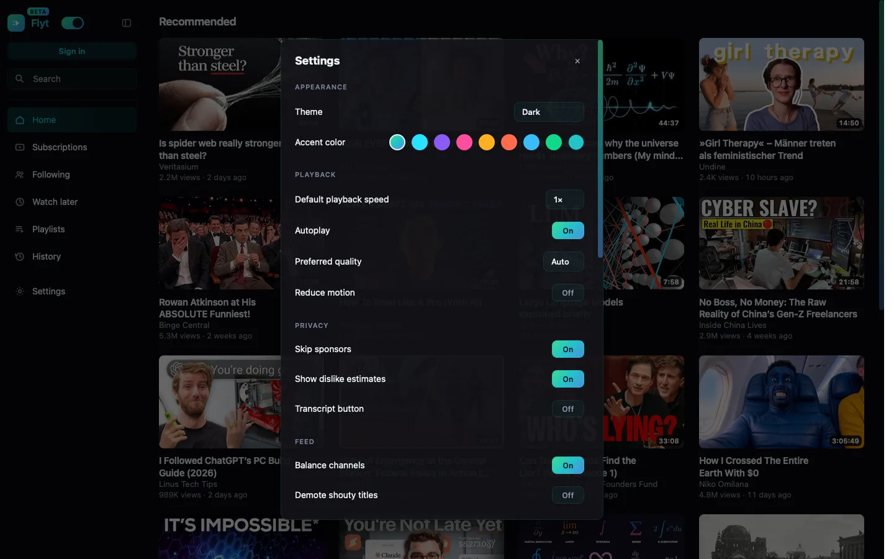
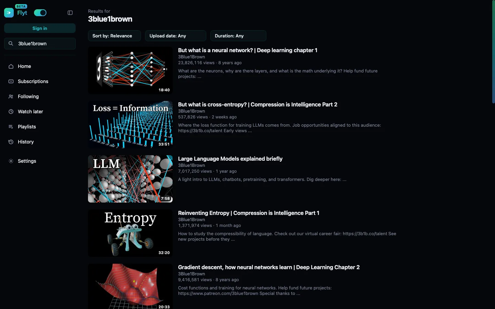

YouTube,
rebuilt.
Flyt throws away YouTube's page and renders its own from YouTube's data — then borrows YouTube's player as a headless engine so video still just works. One file. Vanilla JavaScript. No build step, no dependencies, no ads.

Not a theme. A different application.
Restyling YouTube's own DOM has a ceiling — the layout, the components and the player chrome stay YouTube's, and the result is YouTube in a costume. Flyt reads the same JSON the site reads and draws its own interface from it.
Its own UI, end to end
Zero ytd-* components are reused. Every control you see is Flyt's, drawn from ytInitialData and authenticated InnerTube calls.
YouTube's player, headless
Streams are signature-protected, so the player stays — with its chrome never rendered and its <video> re-parented into Flyt's own stage.
The watch page fits
Up next and Comments are tabs on one rail. Description and transcript open in place. Nothing makes you scroll to find it.
Quiet by default
No ads, no end-screen takeover, no Shorts shelf. Sponsor segments skip via SponsorBlock if you want them to.
Yours to arrange
Collapse the sidebar and the video takes the space. Pick an accent. Theater, mini-player, A–B repeat, frame export, audio-only.
One file, no build
13,900 lines of vanilla JS you can read top to bottom. TypeScript checks it, but nothing compiles it — what ships is what runs.
Measured, not asserted.
The watch page, scrolled, logged out, in WebKit — median of three runs on one machine. The harness loads stock YouTube and Flyt the same way and counts the same frames.
| Watch page, scrolling | Stock | Flyt |
|---|---|---|
| Janky frames (>16.7 ms) | 67 / 149 | 0 / 149 |
| Frame time, p95 | 23.0 ms | 15.0 ms |
| Worst frame | 32.0 ms | 15.0 ms |
| DOM nodes, document | 21,334 | 7,121 |
Reproduce with cd tests && node bench.js. Method, the figures
deliberately not claimed, and one diagnosis that turned out to be wrong
are written up in
PERF.md.
What it looks like.
Light and dark follow the system, or pin either. The accent is yours.





Install
Flyt needs a userscript manager. Once installed it updates itself through @updateURL.
https://raw.githubusercontent.com/prvrtl/flyt/main/flyt.user.js
Safari · macOS & iOS
- Install Userscripts and enable it for youtube.com in Safari's extension settings.
- Open the extension, set a scripts folder, and save the link above into it as a
.user.jsfile.
Chrome · Edge · Firefox
- Install Tampermonkey or Violentmonkey.
- Open the raw link — the manager offers to install it — then reload youtube.com.
Before you install
Flyt is a beta hobby project built on undocumented payloads. YouTube changes those without notice, and when it does something here will break — a feed will render empty, or a control will stop responding. Turning Flyt off is one toggle in the sidebar and gives you the original site back on reload. It is tested against the live site in WebKit, because that is what its author uses; other engines get less attention. Signed-in features act on your real account.